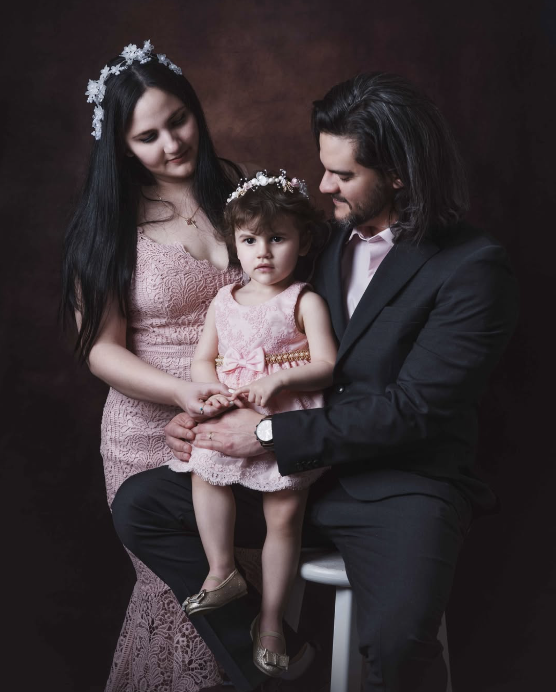

Explore Our Services
At J&G Photography, we blend creativity and precision to offer services that highlight your personal brand and visual storytelling. Whether you're looking to enhance your online presence or preserve meaningful moments through artistic portraiture, our current offerings are tailored to meet your needs:
Portraits

family & kids
corporate
About Us
We are a passionate team dedicated to capturing moments that feel like a dream. With the right experience and equipment, we focus on bringing out the sharpness, color, and emotion in every image. For over 10 years, we’ve specialized in family photography, helping our clients preserve memories that last a lifetime. Our approach combines creativity and technical skill, ensuring each photo is personalized and full of feeling. Beyond photography, we bring complementary design and visual communication skills, so every project reflects not only quality but also care and style.